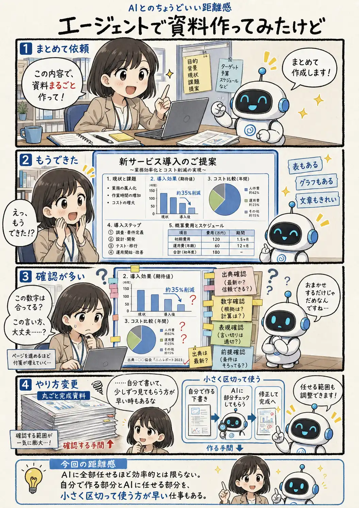

#103
エージェントで資料作ってみたけど
作るのは速い。チェックは……多い（笑）

メモ
AIエージェントにまとめて作業を任せると、文章だけでなく構成や表、グラフまで含めて、一気に完成品らしいところまで進めてくれることがあります。
ただ、完成した範囲が広いほど、人間が最後に確かめる範囲も広がります。見栄えが整っていても、数字や出典、前提、細かな言い回しまで確認するとなると、意外と時間がかかります。
丸ごと任せる方法と、自分で作りながら部分ごとにAIへ確認してもらう方法。仕事によって、速い進め方は変わりそうです。
今回の距離感
AIに全部任せるほど効率的とは限らない。自分で作る部分とAIに任せる部分を、小さく区切って使う方が早い仕事もある。